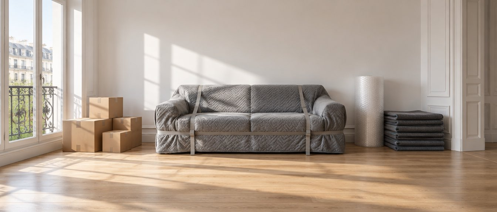

Déménageurs professionnels partout en France
Déménagez l'esprit léger
Décrivez votre déménagement en une minute et recevez votre devis en une heure.
- Démarches administratives incluses
- Modification ou annulation gratuite
Trustpilot
votre devis
satisfaits
Votre devis gratuit en 1 heure
Votre projet
Vos démarches en moins
Eau, gaz, électricité, internet, assurance : nous les transférons, sur les trois formules.
Un conseiller à votre écoute
Un conseiller répond à vos questions et prépare votre devis, du lundi au samedi.
Vous pouvez changer d'avis
Modification ou annulation gratuite jusqu'à deux semaines avant la date retenue.
Un réseau sur toute la France
Plus de mille déménageurs partenaires en France. Quel que soit votre trajet, nous en avons un pour vous.
partenaires
couvertes
garde-meuble
On cherche le camion qui passe déjà par votre route
Un déménageur qui monte seul à Lille doit redescendre à vide, et vous facture les deux trajets. Avec mille déménageurs partenaires, votre conseiller cherche celui dont le camion passe déjà par votre route : son retour est chargé par un autre client, et l'aller seul vous est facturé.
- Mille déménageurs, donc des camions sur toutes les routes
Ce qui apparaît sur votre factureExemple
Camion dédié
Camion déjà sur la route
Exemple sur un Lyon → Lille. Votre devis dépend de votre volume, de votre trajet et de la formule retenue.
Trouver, préparer, ne plus y penser
Trois étapes. Entre les deux, vous n'avez rien à gérer.
Vous trouvez votre déménageur
Décrivez votre logement et votre trajet en une minute. Un conseiller vous rappelle pour confirmer le volume et les accès, puis vous envoie votre devis.
Devis gratuitVous préparez sans y penser
Nous transférons vos contrats (eau, gaz, électricité, internet, assurance) et demandons l'autorisation de stationnement si la rue l'exige.
Démarches inclusesLe jour J, vous regardez
L'équipe protège, charge, achemine et livre. Et si la date bouge, vous pouvez encore modifier ou annuler sans frais jusqu'à deux semaines avant.
Modification gratuiteVous déléguez autant que vous voulez
Ce qui change d'une formule à l'autre, c'est le travail que vous gardez. Ce qui ne change pas : la protection du mobilier, le transport, et le transfert de vos contrats, compris dans les trois.
Éco
Le prix plancher : vous emballez tout
- Protection du mobilier, housses matelas et literie
- Chargement, acheminement, livraison
- Transfert de vos contrats
- Emballage, démontage et remontage en option
- Cartons et adhésif en option
Standard
Le bon compromis : ils gèrent le fragile
- Tout l'Éco, plus :
- Emballage des objets fragiles
- Démontage et remontage des meubles
- Penderie pour les vêtements sur cintres
- Linge plié, livres et déballage en option
Luxe
Vous ne touchez rien : ils font tout
- Tout le Standard, plus :
- Emballage du non fragile : linge plié, livres
- Déballage complet à l'arrivée
- Cartons et adhésif fournis
- Autorisation de stationnement demandée
Inclus dans les trois formules, sans supplément
Quelle que soit la formule retenue, ces quatre postes figurent au devis.

Le transfert de vos contrats
Eau, gaz, électricité, internet et assurance : les démarches sont faites pour vous, sur les trois formules. C'est la corvée dont personne ne veut.
La protection du mobilier
Housses et papier bulle sur les meubles, housses dédiées pour les matelas et la literie. Compris même en formule Éco.
Chargement et livraison
Le camion, l'équipe, l'acheminement et la livraison à l'arrivée. Et le trajet cherché au plus court pour vous.
Le droit de changer d'avis
Modification ou annulation gratuite jusqu'à deux semaines avant la date retenue. Un déménagement se décale souvent : autant que ce soit prévu.
Votre déménagement
n'est pas standard ?
Dites-le à votre conseiller quand il vous rappelle : seuls les déménageurs réellement équipés pour votre cas seront consultés.
Piano et objets lourds
Matériel spécifique, monte-meuble si besoin, assurance adaptée.
Garde-meuble
Plus de 350 sites, chiffrés avec le reste du devis.
Moto, scooter, véhicule
Arrimé et couvert, il part avec le reste de votre mobilier.
Déménagement international
Douanes, inventaire valorisé, groupage ou camion dédié.
Outre-mer
Conteneur maritime, avec des délais à anticiper largement.
Mutation professionnelle
Facturation directe à l'employeur, justificatifs Mobili-Pass.
Un interlocuteur, du devis au Jour J
Vous n'expliquez pas deux fois votre déménagement. Un conseiller suit votre dossier de bout en bout, et vous avez de quoi le joindre directement.
Un conseiller dédié
La même personne du premier appel jusqu'au Jour J. C'est elle qui supervise toute l'organisation de votre déménagement.
Sa ligne directe et son e-mail
Dès que votre dossier passe au service Planning, vous avez sa ligne directe et son adresse e-mail. Plus de standard à repasser.
L'équipe qui se déplace
Une fois la date fixée, vous recevez aussi les coordonnées des déménageurs qui viendront le Jour J.
Une question ? Un conseiller vous répond.
Un conseiller répond à vos questions sur le volume, les accès et les formalités, puis prépare votre devis. Appelez-le, ou faites-vous rappeler.
Ce qu'en disent les déménagés
4,3 sur 5202 avis Voir le profil Trustpilot
Ce qu'on nous demande le plus souvent
Le devis est-il gratuit, et sous quel délai ?
Gratuit, sans engagement, et établi en une heure. L'estimation en ligne et l'appel du conseiller ne vous coûtent rien non plus.
Vous ne payez qu'au moment où vous validez un devis par un acompte, et vous pouvez encore modifier ou annuler gratuitement jusqu'à deux semaines avant la date retenue.
Pourquoi parle-t-on de « retour à vide » ?
Un déménageur qui fait Lyon-Lille doit ramener son camion. S'il revient à vide, ce trajet est dans votre facture : vous payez la route deux fois.
Un camion mobilisé pour vous seul doit rentrer à son point de départ, et ce retour vous est facturé même s'il roule à vide. Un camion qui passait déjà par votre trajet, lui, repart chargé par un autre client : seul l'aller vous est facturé. C'est ce que votre conseiller cherche à obtenir sur les mille déménageurs du réseau, sans pouvoir le garantir sur chaque trajet.
Les cartons sont-ils fournis ?
En formule Luxe, oui : cartons et adhésif fournis, et déballage complet à l'arrivée.
En formules Éco et Standard, c'est une option à ajouter au devis. Dites-le à votre conseiller : elle revient souvent moins cher que de les acheter soi-même, et ils arrivent avant le jour J.
Quand faut-il s'y prendre ?
Six à huit semaines avant, et hors haute saison si vous le pouvez. De juin à septembre, plus les fins de mois et les samedis, les camions partent tôt et les prix montent.
Si votre déménagement est dans dix jours, c'est encore possible : des créneaux se libèrent, et un chargement groupé reste souvent faisable.
Mon devis peut-il augmenter le jour du déménagement ?
Non, si le devis a été bien établi. Un devis signé engage le déménageur.
Les mauvaises surprises viennent presque toujours d'un volume sous-estimé. Mieux vaut surestimer un peu, et signaler dès le départ les objets lourds et les accès difficiles.
Que couvre l'assurance comprise dans le devis ?
Votre mobilier est couvert en garantie dommage pendant toute la prestation, du chargement au remontage.
Pour des objets de valeur, faites établir une déclaration de valeur : c'est elle qui fixe le montant indemnisable. Votre conseiller vous indique le plafond applicable à votre dossier.
Qui s'occupe du transfert de mes contrats ?
Nous, et sur les trois formules : eau, gaz, électricité, internet et assurance. Ces démarches figurent au devis, elles ne sont pas une option.
Restent à votre main les organismes qui exigent une déclaration personnelle (impôts, Sécurité sociale, CAF), ainsi que la réexpédition du courrier, à souscrire auprès de La Poste.
Et si je dois entreposer mes meubles entre deux dates ?
C'est fréquent quand la date de sortie et celle d'entrée ne se touchent pas. Le garde-meuble se chiffre avec le reste du devis, sur un réseau de plus de 350 sites en France.
Signalez-le au conseiller : le volume à entreposer et la durée font le montant, et mieux vaut le prévoir au devis que le découvrir en route.
Existe-t-il des aides pour financer un déménagement ?
Oui. La prime de déménagement de la CAF à partir de trois enfants, sous conditions. Le Mobili-Pass et l'avance Loca-Pass d'Action Logement pour une mobilité professionnelle.
Ces aides se demandent auprès des organismes concernés, pas auprès de nous. Gardez vos factures de déménagement : elles sont presque toujours exigées.
Que faites-vous de mes données ?
Elles servent à établir votre devis, et à rien d'autre. Elles ne sont jamais revendues à des tiers.
Vous pouvez demander leur suppression à tout moment ; la marche à suivre figure dans notre politique de confidentialité.
Ce que le Bon Déménageur vous garantit
Nous ne vous mettons en relation qu'avec des entreprises de déménagement professionnelles.
Un transporteur agréé
Inscrit au registre des transporteurs, licence à l'appui.
Vos biens assurés
Responsabilité civile professionnelle obligatoire. Votre déclaration de valeur chiffre le mobilier.
Un devis transparent
Main-d'œuvre, traction, hors taxes et toutes taxes : tout doit y figurer.
Il est temps de ne plus y penser
Décrivez votre projet en une minute, recevez votre devis en une heure. Et vous gardez la main jusqu'à deux semaines avant le jour J.
Obtenir mon devisGratuit · Sans engagement · Devis en 1 heure